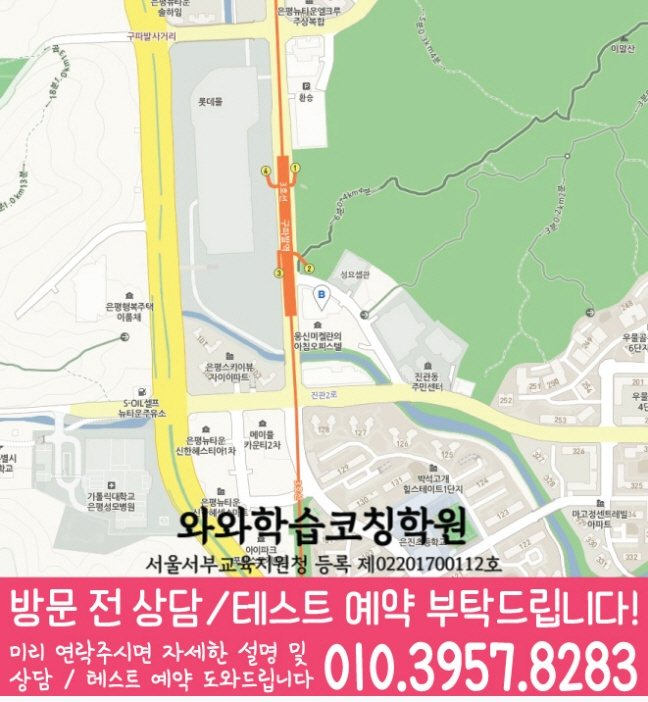

HIGH SCHOOL ENGLISH
갈현동 고등 영어학원
갈현동 고등 영어학원 선택 전 문장 구조·독해 근거 진단, 고등학교 자료, 가능 학년과 센터 위치를 확인하세요. 실제 교재로 상담할 질문도 정리했습니다.
01 Quick answer
갈현동 고등 영어 학습에서 먼저 확인할 핵심 답변
갈현동에서 고등 영어학원을 찾는다면 현재 점수만 보지 말고 문장 구조가 드러난 자료와 독해 근거 재확인 과정을 나누어 살펴보세요. 최근 시험지·시험 범위표·현재 교재를 준비하면 와와학습코칭센터 은평점 상담에서 현재 수준과 다음 점검일을 구체적으로 비교할 수 있습니다.
확인 기준
갈현동 고등학생 상담에서는 문장 구조·독해 근거의 현재 상태를 실제 자료에서 나누어 확인합니다.



010-6839-8283학습 답변 요약
갈현동 고등 영어 학습 자료를 기준으로 진단, 학습 순서, 학교·센터 사실과 상담 질문을 차례로 살펴봅니다.
갈현동 고등 영어 학습의 출발점을 찾는 방법
갈현동 고등 영어학원의 첫 진단에서는 문장 구조와 독해 근거를 한 가지 문제로 묶지 않습니다. 주어와 동사, 수식 범위를 구분해 문장을 읽는지와 답을 고른 문장과 선택지의 표현을 연결하는지를 각각 확인해야 보완 순서가 선명해집니다.
학생에게 답을 다시 외우게 하기보다 ‘문장 뼈대를 먼저 적고 수식어를 붙여 읽기’와 ‘문단별 핵심 문장과 연결어를 표시하며 읽기’ 두 활동을 짧게 수행하게 해 보세요. 결과가 아니라 과정의 변화를 기록해야 다음 점검 기준을 정할 수 있습니다. 이 기준은 갈현동에서 고등 영어 상담을 준비할 때 학생 자료와 함께 확인합니다.
갈현동 고등 영어학원 학습을 진단·연습·재확인으로 나누기
갈현동 고등 영어학원에서 제안받은 계획은 학생 일정에 맞게 줄이거나 순서를 바꿀 수 있어야 합니다. 문장 구조와 독해 근거 중 먼저 확인할 항목을 정하고 점검일을 남기세요.
계획을 확인할 때는 문제 수보다 학생이 이유를 설명하고 다시 수행한 흔적을 봅니다. 갈현동 고등 영어학원 상담에서 첫 점검일과 계획을 바꿀 조건을 미리 질문하세요.
갈현동 고등 영어학원에서 학교 자료를 상담 근거로 쓰는 방법
진관고·신도고·대성고 자료를 준비할 때는 이름을 나열하기보다 현재 단원과 평가 일정을 확인하는 편이 좋습니다. 갈현동 고등 영어학원 상담에서는 그 범위가 주간 과제에 어떻게 반영되는지를 물어보세요.
와와학습코칭센터 은평점의 제공 정보와 학생 학교 자료는 서로 다른 사실입니다. 센터 위치·교습비 경로와 학습 범위·과제 기준을 구분해서 상담 메모에 적어 두세요. 갈현동 학부모가 고등 영어 상담을 준비한다면 이 항목도 따로 메모해 두세요.
문장 구조와 독해 근거를 나누는 갈현동 고등 영어 기준
갈현동에서 학습 계획을 세울 때는 학생이 이미 아는 내용과 혼자 적용하지 못하는 내용을 나눕니다. 주어와 동사, 수식 범위를 구분해 문장을 읽는지를 확인한 다음 답을 고른 문장과 선택지의 표현을 연결하는지를 별도로 살펴보세요.
와와학습코칭센터 은평점에 문의할 때는 설명 방식, 독립 연습과 피드백 주기를 함께 물어보세요. 실제 수업 시간과 반 편성은 센터의 현재 운영 범위에 따라 달라질 수 있습니다. 이 질문은 갈현동에서 고등 영어 계획을 정하기 전에 학생과 함께 살펴봅니다.
갈현동에서 고등 영어학원 상담이 특히 유용한 경우
갈현동에서 고등 영어 상담을 준비하며 문장 구조에서 겪는 어려움과 독해 근거에서 막히는 원인을 구분해 영어 학습 순서를 정해야 하는 고등학생이라면 갈현동 고등 영어학원 상담에서 도움을 받을 부분과 혼자 연습할 부분을 구분해 질문해 보세요. 필요한 수업 조건은 학생마다 달라질 수 있습니다.
추천 여부는 한 번의 점수나 설명만으로 결정하지 않습니다. 긴 문장에서 해석이 끊긴 위치와 표시한 문장 성분과 정답 근거에 밑줄을 긋고 선택지를 지운 이유를 적은 기록을 일정 간격으로 비교해 실제 학습 흐름을 살펴보세요. 상담에는 갈현동 학생의 고등 영어 기록도 함께 가져가세요.
갈현동 고등 영어학원 등록 판단 전에 확인할 질문
갈현동 고등 영어학원 등록 판단은 수업 설명만 듣고 끝내지 않습니다. 현재 교재와 학생 기록, 가능 학년과 통학 조건을 차례로 확인해야 합니다.
표시된 가능 학년은 영어 고1이며 실제 개설 여부는 상담 시점에 달라질 수 있습니다. 확인되지 않은 시간표, 차량·주차와 보강 운영은 페이지에서 단정하지 않습니다. 갈현동 고등 영어 계획에서는 이 내용을 실제 학습 기록과 대조합니다.
- 현재 자료갈현동 고등 영어학원 확인용으로 최근 시험지·시험 범위표·현재 교재에서 문장 구조와 독해 근거가 드러난 부분을 표시합니다.
- 오답 근거갈현동 고등 영어 상담에는 긴 문장에서 해석이 끊긴 위치와 표시한 문장 성분과 고른 답의 근거를 문법 규칙으로 설명한 흔적을 서로 나누어 가져갑니다.
- 가능 일정갈현동 고등 영어 학습에 필요한 통학 시간, 학교 일정과 가정 복습 시간을 적습니다.
- 센터 확인갈현동 고등 영어학원 등록 전에는 와와학습코칭센터 은평점의 과목·학년·시간표·교습비·보완 방식을 확인합니다.
02 Parent perspective
갈현동 고등 영어 학부모 상담 상황
아래 갈현동 고등 영어 상담 장면은 실제 이용 후기나 특정 학생의 성과가 아닌 준비용 가상 예시입니다. 학습 결과는 학생의 출발점과 실천 정도에 따라 달라질 수 있습니다.
갈현동 고등 영어 상담을 준비하는 학부모가 최근 시험지·시험 범위표·현재 교재를 가져오는 장면을 가정했습니다. 학부모는 문장 구조와 독해 근거가 드러난 부분을 보여 주고, 학생이 다음 점검까지 수행할 한 가지 행동이 무엇인지 질문합니다.
갈현동에서 고등 영어 첫 상담을 마친 뒤 학생과 학부모가 내용을 다시 정리하는 상황입니다. ‘규칙 한 줄 뒤에 맞는 예문과 틀린 예문을 함께 적기’를 실제로 해낼 수 있는지 살펴보고, 어려우면 다음 상담에서 분량과 피드백 주기를 조정합니다.
03 FAQ
갈현동 고등 영어 자주 묻는 질문
학생 자료, 가능 학년과 실제 이용 조건을 나누어 답했습니다.
갈현동 고등 영어 상담에서는 무엇을 먼저 진단하나요?
고등 영어 상담에서 사용할 첫 진단 기준입니다. 최근 점수만 보지 말고 주어와 동사, 수식 범위를 구분해 문장을 읽는지와 답을 고른 문장과 선택지의 표현을 연결하는지를 먼저 살핍니다. 갈현동 학생의 최근 시험지·시험 범위표·현재 교재를 가져오면 두 항목이 실제 학습에서 어떻게 나타나는지 구분할 수 있습니다.
갈현동의 고등 영어 가능 학년과 실제 수업 일정은 어떻게 확인하나요?
갈현동 고등 영어학원 페이지의 제공 센터 사실을 기준으로 답합니다. 주소 자료에는 센터가 서울특별시 은평구 진관동 진관2로 29-21 드림스퀘어 제 8층 804호 805호에 있는 것으로 기재되어 있습니다. 제공 자료에서 확인한 가능 학년은 영어 고1입니다. 교습비 자료는 페이지의 센터별 교습비 확인 버튼에서 볼 수 있습니다. 과목 개설과 수업 시각, 보강·통학 관련 운영은 바뀔 수 있으므로 최종 등록 전에 직접 확인하세요.
갈현동 고등 영어 첫 상담 전에 학부모가 정리할 질문은 무엇인가요?
고등 영어 첫 상담 질문은 학습 자료와 이용 조건을 나누어 준비합니다. 학생이 막힌 과정, 실제 가능한 학습 시간과 센터 운영 조건을 구분해 적으세요. 이 상담에서는 첫 점검일, 가정에서 확인할 기록과 시간표·교습비 확인 방법을 차례로 질문하면 됩니다. 갈현동 고등 영어 학습에서는 실제 자료를 확인한 뒤 판단해야 합니다.
진관고·신도고·대성고 자료는 갈현동 고등 영어 계획에 어떻게 반영하나요?
고등 영어 학교 자료 반영 방식은 실제 학생 자료를 기준으로 확인합니다. 학교명 자체보다 학생이 가져온 범위와 현재 교재의 진행 위치를 확인합니다. 문장 구조와 독해 근거가 드러난 부분을 표시해 주간 과제와 복습 순서에 반영되는지 질문하세요. 갈현동의 고등 영어 상담에서는 학생 자료와 센터 조건을 함께 확인합니다.
갈현동에서 고등 영어 학습을 하는 학생의 과제량은 어떤 기준으로 정하나요?
고등 영어 과제량은 학생이 수행하고 다시 확인할 수 있는지를 기준으로 비교합니다. 많은 분량보다 ‘문장 뼈대를 먼저 적고 수식어를 붙여 읽기’와 ‘문단별 핵심 문장과 연결어를 표시하며 읽기’ 두 활동을 실제로 마칠 수 있는지를 먼저 봅니다. 완료 기록을 다음 점검에서 확인하고 학교 일정과 가정 학습 시간에 맞춰 분량을 조정하세요. 갈현동 학부모는 고등 영어 질문과 이용 조건을 나누어 기록해 두세요.
04 Related
갈현동 관련 학원·상담 페이지
같은 지역의 과목 조합과 학년 카테고리, 앞뒤 지역 안내를 함께 확인하세요.